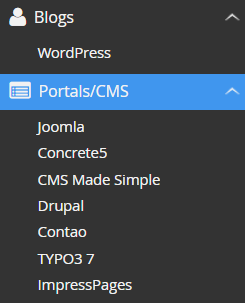
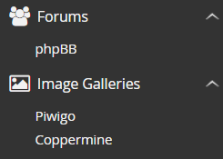
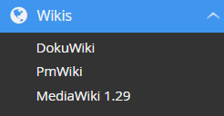
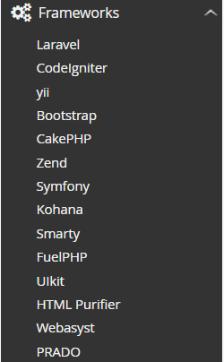
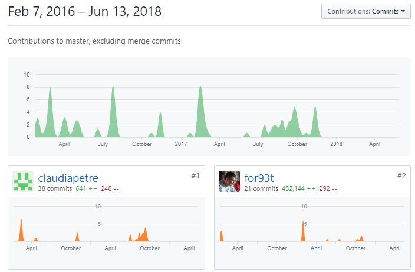
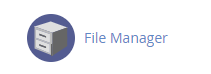
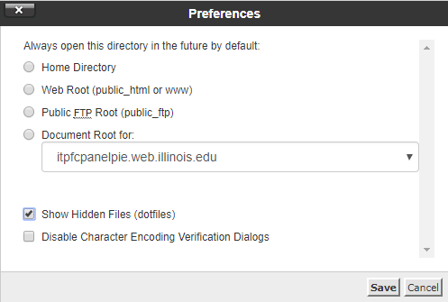
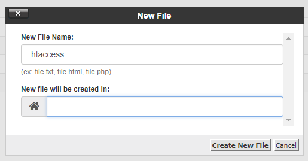
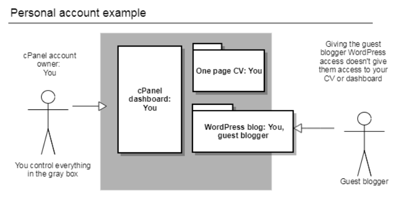
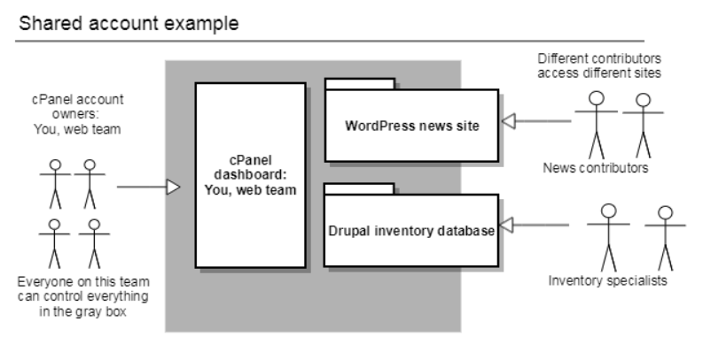

# Terraform .small[ Presented by [Joanna Delaporte](mailto:joanna.delaporte@delaporte.us) at [University of Illinois IT Professionals Forum](https://www.itproforum.illinois.edu/) on November 7, 2018. ] This slide deck is online at http://joanna.delaporte.us ??? - - - Why I care - - - Overview: Disclaimer: --- ## Purpose of this Presentation - ??? --- # Challenges - Misconfigurations ??? --- ## Solutions <a href="https://www.youtube.com/watch?v=ndMG0qZYR6w"> <img class='flow' src='static/img/itpro2018/Tesla_auto_bots_full.jpg'/> </a> - Hosted cPanel - Disable Unused Features - Use Single Sign On - Apply Checklists --- ## Misconfiguration "The difference from an easy example solution and the best example could be security." - [Use Publish.Illinois.edu](http://go.illinois.edu/getpie) - [What is a Microsite](http://publish.illinois.edu/about/what-is-a-microsite/) - [Use hosted cPanel](http://web.illinois.edu/cgi-sys/defaultwebpage.cgi) - Use Softaculous when you can. - Don't wait for Softaculous for Zero day Vulnerabilies - You will see email when this happens. ??? - Hosted cPanel sets up Auto SSL for you. - You will get a scary lookinng welcome email automatically after you request a site. - You don't need to do anything unless 90 days later you get a failure email. - Reach out to the cPanel team if you get an SSL failed email. - If no Softaculous - You don't get Root - When your app needs root: - Google "app name install cPanel" - Softaculous provides an Auto-updater for Drupal --- ## *"I know this system."* ??? - Jurrassic Park - 13 year old girl - being chased by dinosaurs - happens to know how to operate a Silicon Graphics Supercomputer AIX interface. - We should all be so lucky. --- ## Hosted cPanel - [Campus Web Hosting Options - What's Best?](https://answers.uillinois.edu/illinois/web-hosting) - [Engineering IT cPanel Welcome Guide](https://answers.uillinois.edu/illinois.engineering/page.php?id=79074) - [Engineering IT cPanel FAQ](https://answers.uillinois.edu/illinois.engineering/page.php?id=80857) --- ## Hosted cPanel *"I know this system."*     --- ## Add-Ons Vet your add-ons and apps - [Change History](https://github.com/SpamExperts/cpanel-addon/commits/master) - [Open / Closed Issues](https://github.com/SpamExperts/cpanel-addon/issues?utf8=%E2%9C%93&q=is%3Aissue+is%3Aclosed) - [Count of Contributors and Forks](https://github.com/cloudflare/Cloudflare-CPanel/network/members) - [Common Vulnerabilies and Exploits Database - phpBB](https://www.cvedetails.com/product/2635/Phpbb-Phpbb.html?vendor_id=1529)  ??? - Recent change history is better - ideally within the current month - I personally wouldn't run something that hasn't been updated for a year - More contributors is better - More forks is better --- ## Bad Comments *SPAM SPAM SPAM SPAM...SPAMMITY SPAM!!* - Spam - Links to more spam - Links to **viruses** - Pop-ups - Phishing for Passwords <iframe width="560" height="315" src="https://www.youtube.com/embed/anwy2MPT5RE" frameborder="0" allow="autoplay; encrypted-media" allowfullscreen></iframe> ??? ## About Bad Comments - XSS - Cross Site Scripting - CSRF - Cross Site Request Forgery - Watch for innocent looking comment text with link URL to spam. ## Good Comments - Are authenticated - Are moderated - Or are disabled --- ## Uploads - Set file size limits. - Some of the worst attacks are really big. - Most useful files are small. - Set file type limits. - Most attacks require unusual file types. - Do allow file types you expect. - Don't allow any other file types. ??? - Movies taught us viruses are tiny and super portable. - Real viruses are huge --- ## Stale Users You need to *worry* about: - Operating system users > lastlog -t 10000 > temp1; lastlog -t 10 > temp2; diff temp1 temp2; rm temp1; rm temp2 - Wordpress logins - SQL logins - Drupal logins - Wiki logins - Knowledge base logins --- ## Stale Users For each, you need - strong password rules - discourage password reuse - enforce periodic password changes - monitor login activity - not from unexpected part of the world - not moving between pages at robot speed - not brute force guessing passwords... - clean up stale logins ??? - Getting Authentication right is hard. Let central IT do it for you. (See Engineering IT FAQ). - You don't want to manage users and passwords, if you don't have to. - You certaintly don't want to have duplicate passwords and expose them. --- ## Stale Users *Or use **Single Sign On*** - ["Can I use Shibboleth to password protect my website?" at Answers.Uillinois.edu](https://answers.uillinois.edu/illinois.engineering/page.php?id=80857) - Spoiler: Yes - [cPanel Access Control](https://wiki.illinois.edu/wiki/display/cpanelsoft/6+-+Access+control) - Shibboleth is already setup for Campus Hosted cPanel sites - All *you* need to do is modify *.htaccess* to select who has access --- ## cPanel Single Sign On   --- ## cPanel Single Sign On  --- ## cPanel Single Sign On .htaccess Example ``` AuthType Shibboleth ShibRequestSetting requireSession 1 ShibRequestSetting redirectToSSL 443 Require shib-session Require env autossl_request ``` --- ## Users You can do a lot with cPanel  --- ## Users You can do a lot with cPanel  --- ## Bonus Topic: Time Travel - [cPanel Backup and Restore](https://wiki.illinois.edu/wiki/display/cpanelsoft/7+-+Backups+and+restores) ??? - When a serious security compromise happens, you might just wish things looked like they did yesterday. - More backups means more moments to restore from - cPanel service has some automated backups - consider your own needs - Softaculous can backup your site to: FTPS, Dropbox, etc - Use the tool specific backup when you can - Hosted cPanel backup guide - phpMyAdmin or phpPGAdmin if no other option --- ## Additional References - [Get PIE!](http://go.illinois.edu/getpie) - [Create your campus cPanel Account](http://web.illinois.edu/cgi-sys/defaultwebpage.cgi) - [Basic Security Concepts](https://documentation.cpanel.net/display/CKB/Basic+Security+Concepts) - [cPanel Recommended Security Settings](https://documentation.cpanel.net/display/CKB/Recommended+Security+Settings) - [cPanel Community Recommendations](https://documentation.cpanel.net/display/CKB/Recommended+Security+Settings+Checklist) - Follow [Tips to Make Your cPanel Server More Secure](https://documentation.cpanel.net/display/CKB/Tips+to+Make+Your+Server+More+Secure) - [Setup SSH](https://www.siteground.com/tutorials/ssh/enable/) - [Secure SSH](https://documentation.cpanel.net/display/CKB/How+to+Secure+SSH) --- ## If Nothing Else These people got burned, and took the time to put up a warning sign: - [EasyApache Modules to Avoid](https://documentation.cpanel.net/display/CKB/Recommended+Security+Settings+Checklist#RecommendedSecuritySettingsChecklist-EasyApacheconfigurationchecklist) --- ## Questions & Answers - Joanna Delaporte - joanna@delaporte.us - Slide deck is online at http://joanna.delaporte.us --- ??? ### Secure your stand alone / or don't run one ### Secure your connections - API keys - only put them where they're needed. - SQL passwords (don't use sa, do set a long password, don't reuse a password) ### Stuff to keep up on - Public comments and XSS - Who can upload and why not to let them - What file types can be uploaded. Disable exotic stuff. - think about your audiences - can students upload files for professors to read, etc. Tweak Settings => PHP Settings => Maximum Upload Size ### Use CheckLists Basics: Authentication methods Validated cookies Require SSL Security tokens URL referrer checks Password strength ## General Principles - if you run a chmod command, don't miss. - if you install a plug-in, check the GitHub for activity: recent commits, ## Thoughts on note from Chuck - 3rd party apps, plugins - must patch - please don't roll your own - be a good neighbor ## Sound bytes - ## Raw Notes from Chuck Common cPanel Security Pain Points? - The largest number of compromised host events for a single host is on an official campus cPanel instance. This is a very bad title to hold. - The biggest issue we had with that was in policy and management. - I'm pretty sure they let customers (students and staff) access parts of the admin panel I would govern more, mainly the ability to bring in 3rd party apps, add-ons, and plugins. - They also fell behind on patches/updates. - I do not know if they still allow people full access to spin up instances on their own, but that was a huge issue since the admin had no specific knowledge or expectations on individual configurations. - Now having said that, cPanel moved over to the enterprise side, and since then Security has received "assurances". - We actually haven't seen many issues since, so we're hopeful that it's well managed now. (knock on wood) I guess the last gap is in visibility- whether we keep controls loose and let folks do a lot (too much?) or not, I think it's important to be acutely aware of the state of things and keep on top of any irregularities. - Indeed the most severe incident in the pile threatened to take the entire cPanel instance offline in the middle of the semester, which generated much ado. Happy to hear that you're talking on this. cPanel is neat, and - when it's done right it can help Security by placing a whole host of disparate host instances under common management and policy, - in a single managed bucket. - But there has to be agreement on everything from purpose to features to limits (and that's really where I think it gets fuzzy). --- # Questions? - joanna@delaporte.us --- <img class='stretch little' src='static/img/gallery/abstract_ipad/11 8-56-49 PM.jpg'/> <img class='flow' src="static/img/webcon2016/mvc.svg" /> <img class='flow' src="static/img/webcon2016/mvc.svg" /> <img class='flow' src="static/img/webcon2016/mvc.svg" /> <img src='static/img/webcon2016/ratepartial.png' class=''/> <img class='flow' src="static/img/webcon2016/mvcPartial.svg" /> <img src='static/img/webcon2016/addview.png' class='left'/> <img src='static/img/webcon2016/addListViewModelPartial.png' class='capture left'/> --- <img class='stretch left little' src='static/img/gallery/abstract_ipad/11 8-29-50 PM.jpg'/> <img class='stretch little' src='static/img/gallery/abstract_ipad/11 8-46-35 PM.jpg'/> <img class='left stretch little' src='static/img/gallery/abstract_ipad/11 8-29-50 PM.jpg'/> <img class='stretch little' src='static/img/gallery/abstract_ipad/11 8-46-35 PM.jpg'/> --- ??? - You can find this slide deck at Joanna.Delaporte.us